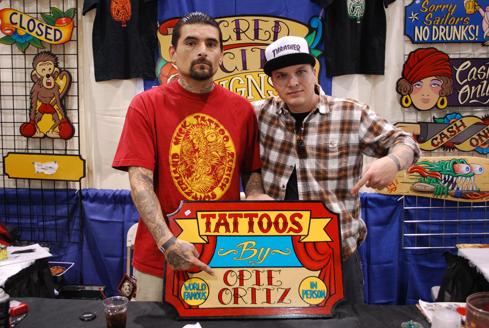

HOME
ABOUT
CONTACT
MUSIC
ART
Album Art
Fine Art
Tattoo Art
Opie Ortiz : THE MAN * THE MYTH * THE LEGEND
Opie Ortiz is an American artist specializing in tattoos, pop art and murals.
To check out Opie's tattoo portfolio click the picture below!


 Opie Ortiz is an American artist specializing in tattoos, pop art and murals.
Opie Ortiz is an American artist specializing in tattoos, pop art and murals.